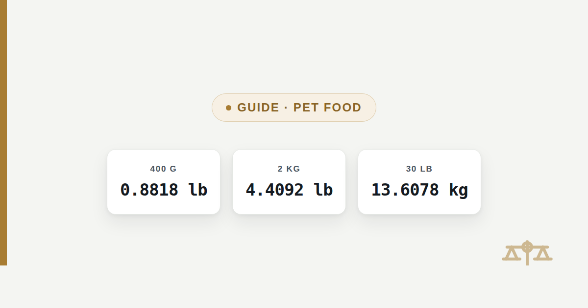

Pet Food Grams to Pounds: Dog and Cat Food Bag & Can Sizes
Pet food packaging mixes units: US bags are sold by the pound, while portion charts, ingredient labels and imported packaging are often printed in grams. This converts a figure from either system into the other.

Pet food packaging mixes two unit systems, because US bags are priced and labeled by the pound while portion charts, ingredient panels, vet handouts and imported packaging are frequently printed in grams. Divide a gram figure by 453.59237 to get decimal pounds, or multiply a pound figure by 453.59237 to get grams — the chart and worked example below apply that formula to the bag, can and treat sizes people look up most.
The quick answer
To convert a pet food weight from grams to pounds, divide the number of grams by 453.59237; to go the other way, multiply the number of pounds by 453.59237. These three sizes cover a large share of what shows up on dog and cat food packaging:
US dry pet food bag sizes converted to grams and kilograms
A US dry food bag is sold by the pound, and common sizes run from around 3 to 4 pounds for a small bag up to 30 to 40 pounds for the largest bags stores carry. Converting the printed pound figure to grams or kilograms is useful when comparing a US bag to a metric-labeled product, or when a shipping, storage or scale limit is given in a metric unit.
| Bag size (lb) | Grams (g) | Kilograms (kg) |
|---|---|---|
| 3 lb | 1,360.78 g | 1.3608 kg |
| 4 lb | 1,814.37 g | 1.8144 kg |
| 5 lb | 2,267.96 g | 2.2680 kg |
| 6 lb | 2,721.55 g | 2.7216 kg |
| 7 lb | 3,175.15 g | 3.1751 kg |
| 15 lb | 6,803.89 g | 6.8039 kg |
| 20 lb | 9,071.85 g | 9.0718 kg |
| 25 lb | 11,339.81 g | 11.3398 kg |
| 30 lb | 13,607.77 g | 13.6078 kg |
| 40 lb | 18,143.69 g | 18.1437 kg |
Imported kilogram bags converted to pounds
A dry pet food bag labeled in kilograms — common on packaging made for the UK, the EU, Canada or Australia — converts to pounds by multiplying the kilogram figure by 1,000 to get grams, then dividing by 453.59237. This is the comparison to make when a metric-labeled bag is priced next to a US pound-labeled one and the two sizes are not obviously equivalent.
| Bag size (kg) | Pounds (lb) |
|---|---|
| 1 kg | 2.2046 lb |
| 2 kg | 4.4092 lb |
| 3 kg | 6.6139 lb |
| 4 kg | 8.8185 lb |
| 6 kg | 13.2277 lb |
| 10 kg | 22.0462 lb |
| 12 kg | 26.4555 lb |
| 15 kg | 33.0693 lb |
| 20 kg | 44.0925 lb |
A 15 kg bag, a common large size on metric packaging, is 33.0693 pounds — close to, but not the same as, a US 30 lb bag, since 30 pounds is 13.6078 kilograms while 15 kilograms is 33.0693 pounds. The two numbers "15" and "30" describe different weights depending on which unit follows them, which is exactly why checking the actual figure matters when a size looks familiar.
Wet food cans, pouches and treat bags converted to pounds
Wet food and treats are usually sold in much smaller units than dry bags, and the weight is almost always printed in grams even on US packaging, since that is how can and pouch sizes are labeled internationally. The same formula applies at this smaller scale.
| Package weight (g) | Decimal pounds | Pounds & ounces |
|---|---|---|
| 85 g | 0.1874 lb | 0 lb 3.00 oz |
| 156 g | 0.3439 lb | 0 lb 5.50 oz |
| 200 g | 0.4409 lb | 0 lb 7.05 oz |
| 226 g | 0.4982 lb | 0 lb 7.97 oz |
| 400 g | 0.8818 lb | 0 lb 14.11 oz |
| 800 g | 1.7637 lb | 1 lb 12.22 oz |
| 2000 g | 4.4092 lb | 4 lb 6.55 oz |
A single-serve wet food can around 85 grams is 0.1874 pounds, or just under 3 ounces, which is why a case of small cans is usually described in count rather than total weight. A larger 800 gram tin, more common on imported or bulk packaging, is 1.7637 pounds — 1 pound 12.22 ounces on a scale that reads pounds and ounces.
Converting a portion figure printed on a label or handout
Packaging, a printed feeding chart, or a vet's own handout sometimes gives a weight in grams that needs to be read in pounds, or the other way around. The method is the same division or multiplication used above, applied to whatever number is already on the page — this page converts the figure given, it does not supply or suggest one.
Package or handout states 340 g
340 ÷ 453.59237 = 0.7496 lb
whole pounds → 0 lb
0.7496 × 16 = 11.99 oz
result → 0 lb 11.99 oz, essentially three-quarters of a pound
340 ÷ 453.59237 = 0.7496 lb
whole pounds → 0 lb
0.7496 × 16 = 11.99 oz
result → 0 lb 11.99 oz, essentially three-quarters of a pound
Package or handout states 1.5 lb
1.5 × 453.59237 = 680.39 g
result → 680.39 g, or 0.6804 kg
1.5 × 453.59237 = 680.39 g
result → 680.39 g, or 0.6804 kg
What this page does not do
This page converts a weight figure from one unit to another; it does not recommend a feeding amount, a portion size, or a dosage for any dog or cat. How much to feed a specific animal depends on its weight, age, activity level, body condition and the specific food's calorie density, and that judgment belongs to the packaging's own feeding guidelines or a veterinarian, not a unit converter. If a package, a printed chart, or a vet has already given a weight in grams or pounds, the tables and formula above convert that exact figure — they do not adjust, validate, or second-guess the amount itself.
Frequently asked questions
How many grams are in a pound of pet food?
One pound of pet food, or of anything else, is 453.59237 grams, because a pound is defined as exactly that many grams under the international avoirdupois standard. This is a fixed unit conversion and does not depend on the type of food, the brand, or how densely it is packed.
How much does a 30 lb bag of dog food weigh in kilograms?
A 30 pound bag is 13.6078 kilograms, or 13,607.77 grams, calculated by multiplying 30 by 453.59237. The figure describes only the pound-to-kilogram conversion of the labeled bag weight, not how much food that bag actually contains once opened.
How many pounds is a can of wet cat food?
A small single-serve wet food can around 85 grams is 0.1874 pounds, just under 3 ounces, while a larger 5.5 ounce (156 gram) can is 0.3439 pounds. The exact figure depends on the can’s printed weight, which is worth checking directly since sizes vary by brand.
How many grams is a 5 pound bag of pet food?
A 5 pound bag is 2,267.96 grams, or 2.2680 kilograms, from multiplying 5 by 453.59237. Each additional pound adds another 453.59237 grams, so a 6 pound bag is 2,721.55 grams and a 7 pound bag is 3,175.15 grams.
How many pounds is a 400 gram bag of cat food?
400 grams is 0.8818 pounds, or 0 pounds 14.11 ounces, from dividing 400 by 453.59237. That is just under a full pound, which is why a 400 gram bag and a 1 pound (453.59 gram) bag look close in size but are not identical.
Is pet food weighed differently from other food when converting grams to pounds?
No. Grams and pounds both measure mass, so the same 453.59237 grams-per-pound conversion applies to pet food, human food, or any other product with no adjustment for what is being weighed. What varies by product is only the number printed on the package, not the formula used to convert it.
Sources
- International Yard and Pound Agreement, 1959 — defines the international avoirdupois pound as exactly 453.59237 g
- NIST Special Publication 811, Guide for the Use of the International System of Units (SI) — exact conversion factors between metric and customary units